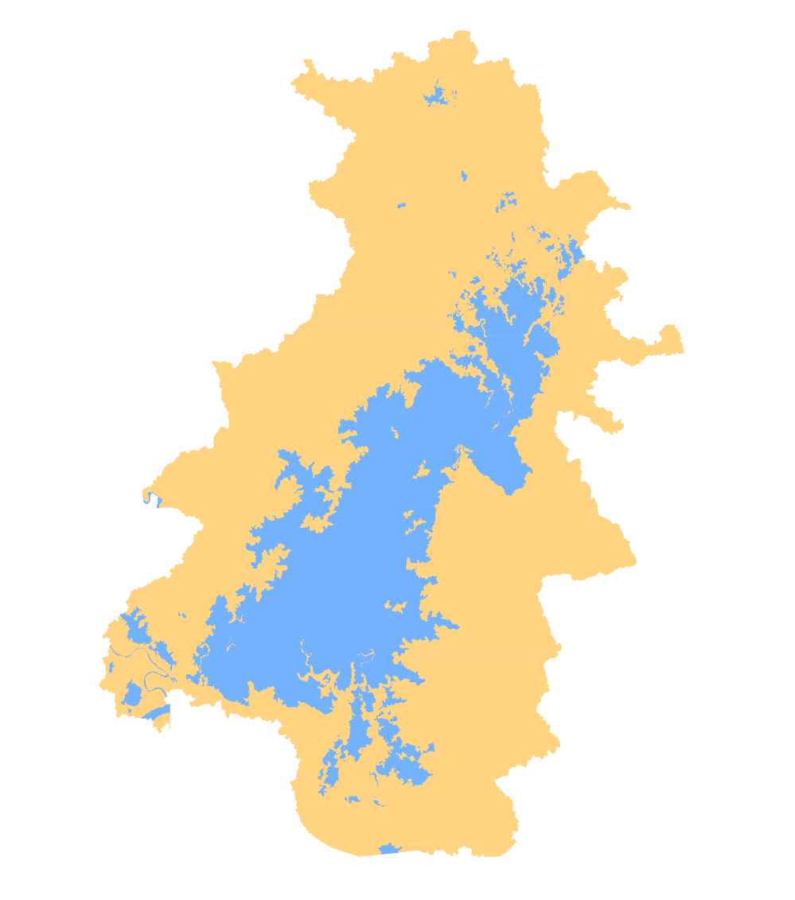
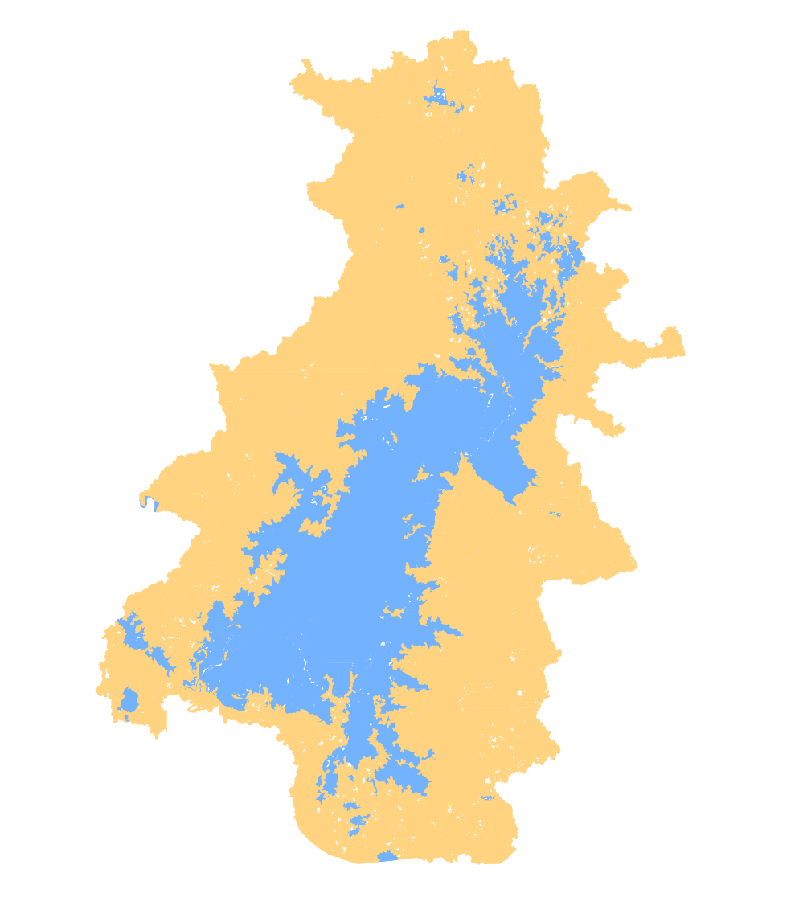
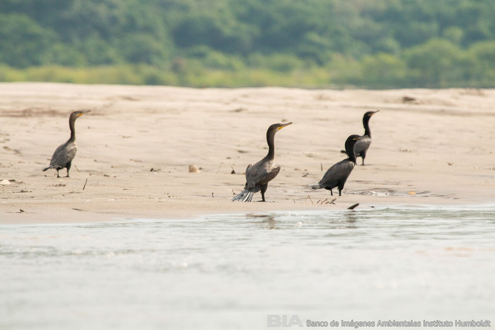

Extensión de superficies del CCZ en temporada seca y de lluvias
Temporada seca
Temporada de lluvias
Humedales
Superficies inundables
Humedades:
67 332,2 ha
Superficies inundables:
161 169,7 ha

Humedales
Superficies inundables
Humedades:
66 036,7 ha
Superficies inundables:
153 301,5 ha

